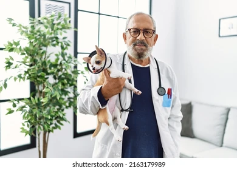

Informacion de nuestros profesionales:
Nombre: Dr. Juan Pérez
Clínica Veterinaria: Ayuda a un peludo
Dirección: Calle 123, Santiago
Teléfono: 555-123-4567
Especialidad: Pequeños animales, como perros y gatos.
Horario: Lunes a viernes de 9:00 a.m. a 6:00 p.m., sábados de 9:00 a.m. a 1:00 p.m.
Nombre: Dra. María García
Clínica Veterinaria: Amigos Peludos
Dirección: Avenida Principal 456, Ciudad ABC
Teléfono: 555-987-6543
Especialidad: Animales exóticos y de granja.
Horario: Lunes a sábado de 8:00 a.m. a 7:00 p.m., domingos cerrado.